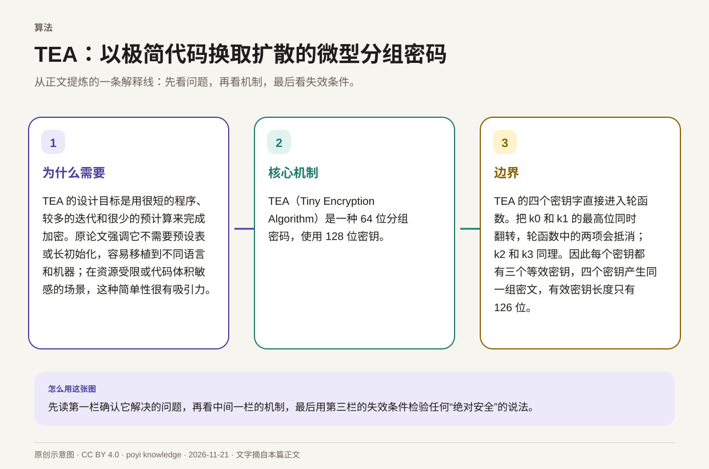
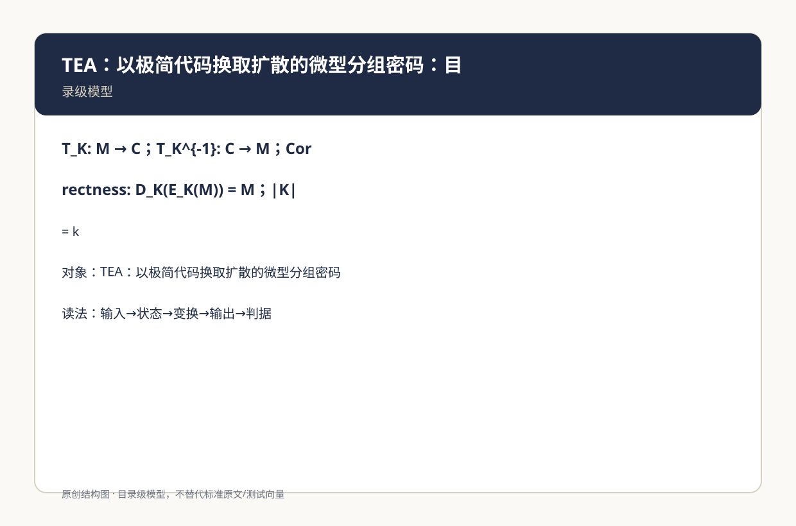

原理与机制
算法：TEA 微型加密算法（Tiny Encryption Algorithm）。TEA（Tiny Encryption Algorithm）是一种 64 位分组密码，使用 128 位密钥。它把 64 位明文分成两个 32 位字 y 和 z，把 128 位密钥分成四个 32 位字 k0、k1、k2、k3，然后执行 32 个循环；每个循环包含两次 Feistel 式混合，因此常被称为 64 轮。每个循环先累加黄金比例常数 delta = 0x9e3779b9，再更新 y 和 z：
sum += delta
y += ((z << 4) + k0) xor (z + sum) xor ((z >> 5) + k1)
z += ((y << 4) + k2) xor (y + sum) xor ((y >> 5) + k3)
所有加法都是 32 位模 2^32 加法，移位和异或也是 32 位操作。解密执行相反的 32 个循环：sum 从 delta * 32 开始，先逆 z 的更新，再逆 y 的更新，最后减去 delta。TEA 没有密钥扩展：四个密钥字直接进入轮函数。这是它代码极短的原因之一，也是等效密钥问题的来源。TEA 不需要 S-box、查找表或预计算，轮函数只由加法、移位和异或组成，适合用很少的代码实现。

为什么重要
TEA 的设计目标是用很短的程序、较多的迭代和很少的预计算来完成加密。原论文强调它不需要预设表或长初始化，容易移植到不同语言和机器；在资源受限或代码体积敏感的场景，这种简单性很有吸引力。TEA 也是理解 ARX 设计的清晰样本：没有 S-box，非线性来自加法、移位、异或的组合；每一轮把 y 和 z 交叉混合，32 个循环把局部变化扩散到两个 32 位字。它的代码可以直接写成十几行，因此常被用作教学实现。但 TEA 的简单性有代价。四个密钥字直接使用，导致每个密钥有三个等效密钥，有效密钥长度只有 126 位；相关密钥攻击也被指出。64 位块在生日碰撞意义下的安全边界也比 128 位块窄。TEA 适合作为历史和教学案例，不适合新设计。
应用与实例
TEA 曾被用于软件和嵌入式场景，因为它不需要表、代码短、容易移植。原论文的目标是让一个短程序在大多数机器上运行；这让 TEA 成为早期轻量级分组密码的代表之一。TEA 的参考测试向量是零明文、零密钥、32 个循环：
明文 0000000000000000
密钥 00000000000000000000000000000000
密文 41ea3a0a94baa940
本文的教学实现复现这个向量，并验证解密回到零明文。它还演示等效密钥：把密钥的 k0/k1 最高位同时翻转、k2/k3 最高位同时翻转，或四个字都翻转，得到的密文完全相同。TEA 只定义分组密码，不定义工作模式。实际使用仍需 CBC、CTR 等模式；而 TEA 的 64 位块和密钥弱点意味着它不应被用于新的协议或长期数据保护。

边界与攻击面
TEA 的四个密钥字直接进入轮函数。把 k0 和 k1 的最高位同时翻转，轮函数中的两项会抵消；k2 和 k3 同理。因此每个密钥都有三个等效密钥，四个密钥产生同一组密文，有效密钥长度只有 126 位。这不是实现错误，而是算法结构的结果。### 相关密钥攻击
TEA 的简单密钥使用方式还导致相关密钥攻击。Needham 和 Wheeler 在 1997 年的 TEA extensions 中指出，TEA 的混合部分看起来未被破坏，但相关密钥攻击是可能的；在两个相关密钥下构造 2^32 个文本看起来并不实际。他们还指出有效密钥长度是 126 位而不是 128 位。### 64 位块
TEA 的块只有 64 位。与 128 位块相比，生日碰撞意义下的安全边界更窄；处理大量数据时，64 位块会限制可安全加密的块数。TEA 没有像后来的标准那样给出单密钥加密次数限制。### 无完整性
TEA 只提供分组密码的伪随机置换，不提供完整性。翻转密文会改变对应明文，但 TEA 本身无法检测；需要认证时应使用 AEAD 或加密后再 MAC。本文的教学实现只处理 TEA 的固定向量、32 循环加密/解密和等效密钥演示。它不生成密钥、不做常量时间处理、不实现工作模式、协议、密钥管理或侧信道防护，不能用于生产环境。
历史与背景
TEA 由 David Wheeler 和 Roger Needham 在 1994 年的 Fast Software Encryption 会议上提出，论文强调短程序、多次迭代、无预设表和容易移植。它的简洁性使它成为教学和嵌入式实现的常见例子。1997 年，Needham 和 Wheeler 发布 TEA extensions，修正 TEA 的密钥扩展和密钥引入方式，形成 XTEA。XTEA 仍是 64 位块、128 位密钥和 64 轮，但轮函数和密钥调度不同；它本身是独立实体，不能和 TEA 混为一条。TEA 的历史价值在于展示极简轮函数（加法、移位、异或）设计的可能性和边界：它用很少的代码获得扩散，但也暴露了等效密钥和相关密钥问题。后来的轻量级密码在简单性和密钥调度之间做了更谨慎的权衡。
逐步示例与核验
复算示例
取标准或公开测试向量中的一组参数，按“输入—执行—输出”记录：先写出该条目的形式式 (C=E_K(P;r),\qquad P=D_K(C))；再按规范顺序执行每一步，最后把输出与独立实现或标准向量逐字节对照。若没有可引用的数值向量，就只记录结构步骤，不伪造输出。
参考出处
- Wikipedia search entry for TEA 微型加密算法. https://zh.wikipedia.org/w/index.php?search=TEA%20%E5%BE%AE%E5%9E%8B%E5%8A%A0%E5%AF%86%E7%AE%97%E6%B3%95
- Handbook of Applied Cryptography (Menezes, van Oorschot, Vanstone). https://www.cacr.math.uwaterloo.ca/hac/